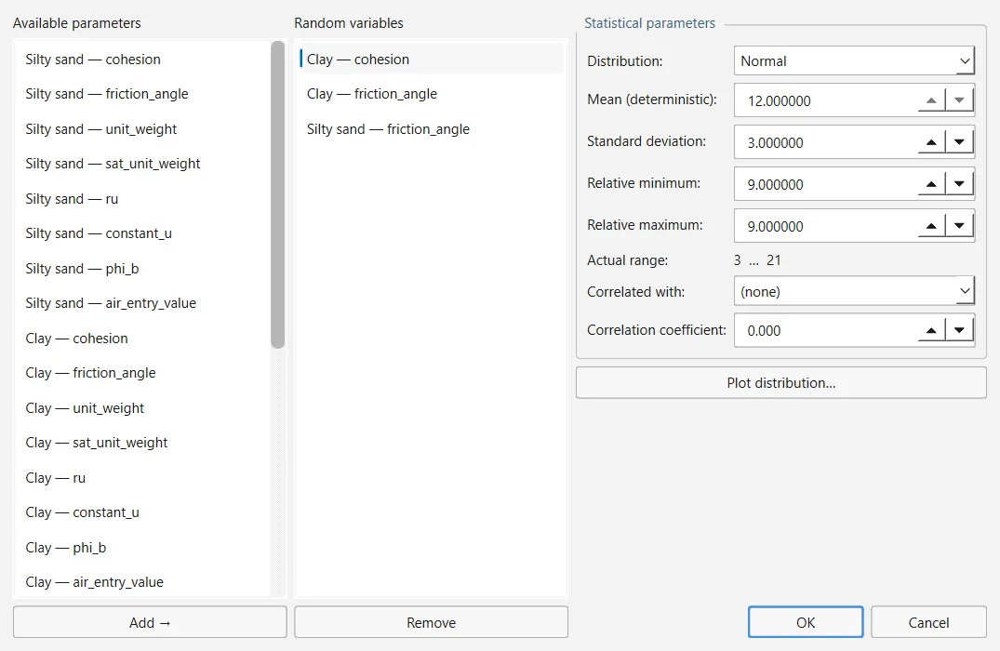
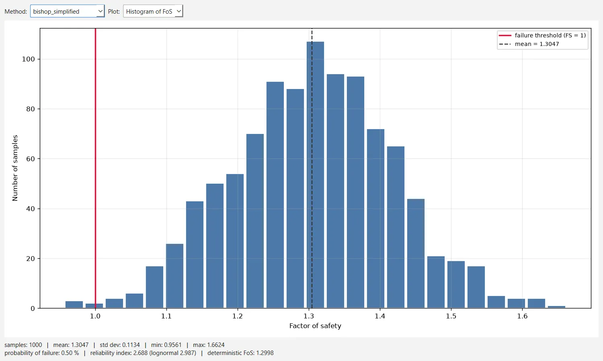

Un análisis probabilístico trata algunos datos de entrada del modelo como variables aleatorias, extrae muestras de ellas y recalcula el factor de seguridad para cada muestra, lo que da su distribución, la probabilidad de rotura y el índice de fiabilidad. Un análisis de sensibilidad, en cambio, barre un dato de entrada cada vez a lo largo de su rango. Esta página explica cómo configurar ambos y cómo leer sus resultados; la estadística en que se basan está en la Sección 3.11.
En esta versión la ejecución no puede completarse desde el menú de la ventana: véase la Sección 2.10.4. Los ajustes que siguen son, aun así, los que usa el análisis cuando se ejecuta a través del servidor MCP o de la API de Python.
2.10.1Activación del análisis#
Ambos análisis se activan en Analysis → Project Settings → Statistics. Hasta que se marca uno de ellos, los comandos del menú Statistics permanecen en gris: Random Variables… se habilita primero, Compute Statistics cuando hay definida al menos una variable aleatoria y Show Statistics cuando hay resultados que mostrar.
| Campo | Qué hace | Por defecto |
|---|---|---|
| Probabilistic analysis | Muestrea las variables aleatorias y recalcula el factor de seguridad para cada muestra. | desactivado |
| Sensitivity analysis | Barre cada variable aleatoria a lo largo de su rango, una cada vez. | desactivado |
| Analysis type | Global Minimum evalúa cada muestra sobre la superficie crítica del análisis determinista. Overall Slope repite toda la búsqueda para cada muestra, de modo que no se supone fija la posición de la superficie crítica; es mucho más lento. | Global Minimum |
| Sampling method | Monte Carlo o Latin Hypercube. | Monte Carlo |
| Number of samples | N (de 1 a 1 000 000). | 1000 |
| Sensitivity intervals | Intervalos iguales en que se divide el rango de cada variable para el barrido de sensibilidad (de 2 a 500); se evalúan intervalos + 1 valores. | 50 |
2.10.2Variables aleatorias#
Statistics → Random Variables… abre un diálogo de tres columnas. Available parameters enumera todos los datos de entrada del modelo que pueden pasar a ser aleatorios; selecciona uno y pulsa Add → para pasarlo a Random variables (Remove lo devuelve). La distribución de la variable seleccionada se edita a la derecha. Los parámetros disponibles son:
- los parámetros del modelo de resistencia de cada material (cohesión, ángulo de rozamiento y los parámetros de los demás modelos);
- el peso específico y el peso específico saturado de cada material, ru, la presión intersticial constante, el ángulo φb de resistencia al corte no saturado y el valor de entrada de aire;
- los parámetros hidráulicos de cada material que los tiene;
- los parámetros de cada soporte;
- las magnitudes de las cargas distribuidas y lineales;
- los coeficientes sísmicos kh y kv;
- un desplazamiento vertical del nivel freático, cuando el modelo tiene uno.
| Campo | Qué hace |
|---|---|
| Distribution | Normal, Uniform, Triangular, Beta, Exponential, Lognormal o Gamma. |
| Mean (deterministic) | El valor del modelo; solo lectura. Para cambiar la media, cambia el modelo. |
| Standard deviation | La usan Normal, Lognormal, Beta y Gamma; aparece en gris para las demás. |
| Relative minimum, Relative maximum | Hasta dónde puede bajar y subir la variable respecto a la media. Actual range muestra el resultado, desde la media − mínimo relativo hasta la media + máximo relativo. |
| Correlated with, Correlation coefficient | Otra variable aleatoria del modelo y un coeficiente entre −1 y 1. Lo habitual es un coeficiente negativo entre la cohesión y el ángulo de rozamiento. |
Una variable recién añadida es Normal, con una desviación típica del 10 % de su media y límites relativos del 30 % de la media a cada lado (0.1 y 0.3 cuando la media es cero, como en un coeficiente sísmico o en el desplazamiento del nivel freático). Plot distribution… dibuja la densidad de probabilidad que se muestreará, con la media marcada.

Toda distribución se trunca a su rango real: las muestras se obtienen invirtiendo la distribución entre los dos límites, de modo que ningún valor queda fuera de ellos y los estratos del hipercubo latino se conservan tras la truncación. Una correlación declarada se impone reordenando los rangos de la segunda variable, lo que conserva exactamente las dos distribuciones marginales (Iman y Conover, 1982). Cada muestra se aplica a una copia del modelo; la ejecución nunca modifica tu proyecto.
Código: ogr_core/statistics/distributions.py · ogr_core/statistics/random_variables.py2.10.3Muestreo y semilla#
Monte Carlo extrae cada muestra de forma independiente. Latin Hypercube divide el rango de probabilidad de cada variable en N estratos y extrae una muestra de cada uno, lo que suele necesitar menos muestras para la misma precisión (McKay, Beckman y Conover, 1979).
Los números aleatorios se configuran en Analysis → Project Settings → Random Numbers:
- Generation: Pseudo-random (por defecto) es reproducible: la misma Seed (10116 por defecto) da siempre las mismas muestras y, por tanto, la misma respuesta; Random toma la semilla del reloj, de modo que las ejecuciones sucesivas difieren, lo que permite comprobar que una conclusión no es un artefacto de una semilla concreta. El cuadro Seed aparece en gris con Random.
- Share one Latin Hypercube stratification across variables (desactivado): la muestra i queda entonces en el mismo estrato de todas las variables, de modo que todas resultan desfavorables a la vez. Responde a una pregunta distinta de la del caso independiente y suele ampliar la dispersión. No hace nada con Monte Carlo.
La misma página fija también la semilla de las búsquedas aleatorias de superficies de rotura (Sección 2.7).
2.10.4Cálculo de las estadísticas#
Statistics → Compute Statistics ejecuta primero el análisis determinista, con cada método activado y su búsqueda, para hallar la superficie crítica de cada método. Después:
- un análisis Global Minimum evalúa las N muestras sobre la superficie crítica de cada método —cada método conserva la suya—;
- un análisis Overall Slope repite toda la búsqueda N veces. Además de la distribución del factor de seguridad mínimo, registra la superficie crítica de cada muestra y la superficie probabilística crítica: la superficie individual con mayor probabilidad de rotura entre las evaluadas al menos cinco veces, que no tiene por qué ser la superficie crítica determinista;
- un análisis de sensibilidad se calcula como se describe más adelante.
Con una norma de diseño activada, a cada muestra se le aplican los coeficientes parciales igual que al modelo determinista, de modo que las estadísticas describen el factor de sobredimensionamiento (Sección 2.11). Con un modo de análisis sísmico activado (coeficiente sísmico crítico o desplazamiento de Newmark), las estadísticas se toman sobre el factor de seguridad de la superficie con el menor coeficiente sísmico crítico, que no es necesariamente el menor factor de seguridad de la muestra; las notas del análisis lo indican.
Iniciada desde la ventana, la ejecución se detiene con un error interno (TypeError: cannot pickle 'MainWindow' object) cuando intenta copiar el modelo para la primera muestra, después del análisis determinista. La ventana no muestra ningún mensaje, no se produce ninguna estadística y Show Statistics sigue en gris. El mismo análisis se ejecuta a través del servidor MCP (su herramienta statistics_run) y de las operaciones de la API de Python, que copian el modelo de una forma que funciona (Sección 5.1, Sección 5.3).
2.10.5La ventana Statistics#
Tras una ejecución correcta, la ventana Statistics se abre por sí sola; Statistics → Show Statistics la vuelve a abrir. Elige el Method y el Plot:
- Histogram of FoS: los factores de seguridad de las muestras, con el umbral de rotura (F = 1) y la media marcados. La línea inferior da el número de muestras, la media, la desviación típica, el mínimo y el máximo, la probabilidad de rotura, el índice de fiabilidad (normal y lognormal) y el factor de seguridad determinista.
- Convergence: el factor de seguridad medio y la probabilidad de rotura en función del número de muestras. Una cola plana indica que el número de muestras es suficiente; una curva que aún deriva indica que hacen falta más muestras.
- Sensitivity: el factor de seguridad frente a cada variable, como porcentaje de su rango, con las variables ordenadas según cuánto lo modifican.
Cuando una ejecución no ha podido muestrear todas las variables —por ejemplo, porque una variable se refiere a un material que se ha eliminado después—, la ventana lo indica en rojo encima del gráfico.

La probabilidad de rotura y los índices de fiabilidad se calculan a partir de las N muestras válidas:
donde
- número de muestras con un factor de seguridad inferior a 1
- media y desviación típica de los factores de seguridad
- media y desviación típica de sus logaritmos naturales, para el índice lognormal
2.10.6El menú Statistics de la ventana Interpret#
La ventana Interpret (Sección 2.8) tiene su propio menú Statistics. Sus tres primeros gráficos no usan las muestras probabilísticas: se dibujan a partir de los factores de seguridad de las superficies analizadas por la búsqueda y están disponibles tras cualquier Compute.
| Comando | Qué muestra | Requiere |
|---|---|---|
| Histogram Plot… | Histograma de los factores de seguridad de las superficies válidas de la búsqueda (25 intervalos, ajustable). | un Compute |
| Cumulative Plot… | Distribución acumulada de los mismos factores de seguridad. | un Compute |
| Scatter Plot… | Factor de seguridad en función del radio, para las superficies válidas de la búsqueda. | un Compute |
| Sensitivity Plot… | Las curvas de sensibilidad del primer método. | resultados estadísticos |
| Convergence Plot… | Factor de seguridad medio y probabilidad de rotura en función del número de muestras. | resultados estadísticos |
| Export Statistics Data… | Un archivo CSV con una fila por muestra: su número, el valor de cada variable aleatoria y el factor de seguridad. | resultados estadísticos |
| Show GM Surfaces, Pick GM Surfaces | Dibuja, o enumera para su selección, cada mínimo que indica el resultado: la superficie crítica de cada muestra de una ejecución Overall Slope, o las regiones que distinguió una Particle Swarm Search con varios mínimos. | cualquiera de los dos casos |
| Critical Probabilistic Surface | Da en la barra de estado la probabilidad de rotura y el índice de fiabilidad de la superficie probabilística crítica. | una ejecución Overall Slope |
Los comandos que necesitan resultados estadísticos aparecen en gris hasta que los hay, con un texto emergente que lo indica. Show GM Surfaces y Pick GM Surfaces no los necesitan: también funcionan tras una Particle Swarm Search con Report several minima marcada, que en la versión 0.1.235 es la única forma de usarlos desde la ventana.
2.10.7Análisis de sensibilidad#
Para cada variable aleatoria, una tras otra, el análisis de sensibilidad divide su rango real en el número de Sensitivity intervals (50 por defecto, es decir, 51 valores) y recalcula el factor de seguridad sobre la superficie crítica de cada método en cada valor, manteniendo todas las demás variables en sus medias. Solo se usan el mínimo y el máximo de cada variable: la distribución, la desviación típica y las correlaciones no intervienen, y de él no resulta ninguna probabilidad de rotura. Su resultado muestra qué datos de entrada importan más y hasta dónde puede variar uno de ellos antes de que el factor de seguridad llegue a 1.
2.10.8Lectura de los resultados#
- Comprueba el gráfico de convergencia antes de citar una probabilidad de rotura: un valor que todavía varía con el número de muestras no es aún un resultado.
- Una ejecución Global Minimum supone que la superficie crítica no cambia con las muestras. Cuando los datos de entrada pueden cambiar el mecanismo —una capa débil cuya resistencia varía, por ejemplo—, compara con una ejecución Overall Slope.
- El índice de fiabilidad supone una distribución normal o lognormal del factor de seguridad; la probabilidad de rotura no supone nada, sino que cuenta muestras, de modo que con pocas muestras una probabilidad pequeña queda mal resuelta.
- Una muestra que no puede evaluarse se deja fuera, y la ejecución indica cuántas fueron.